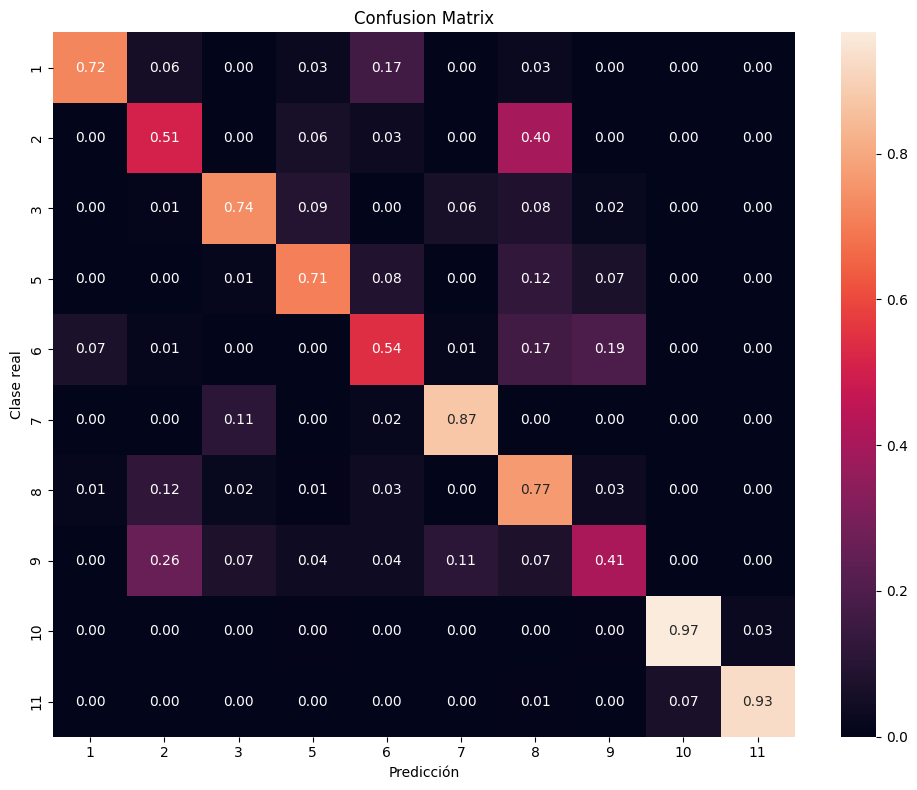
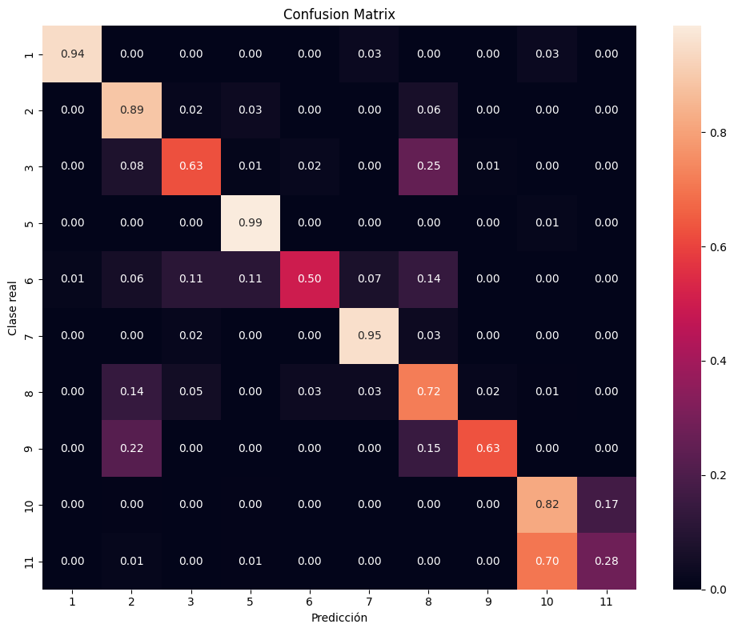
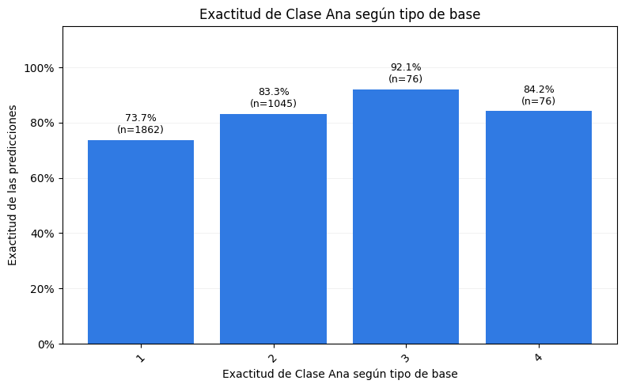
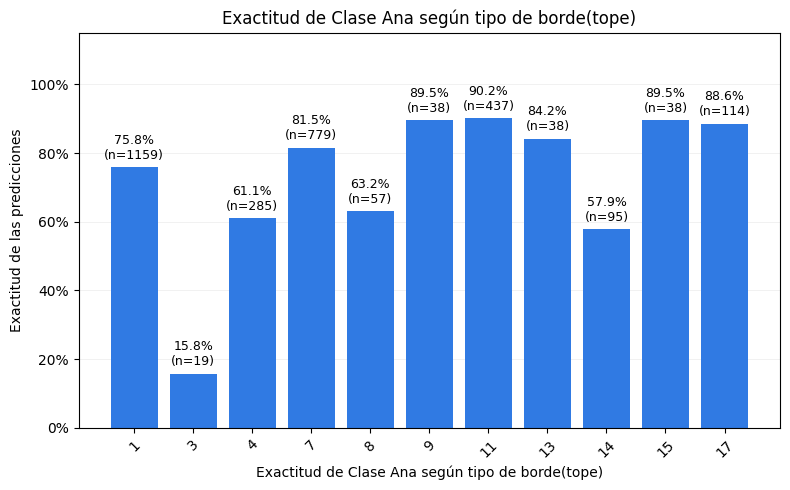
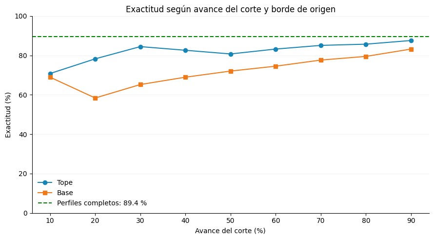
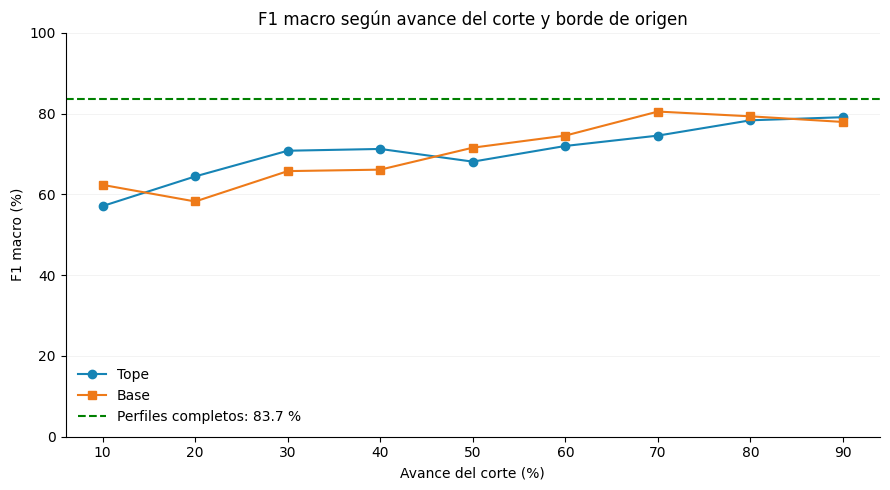
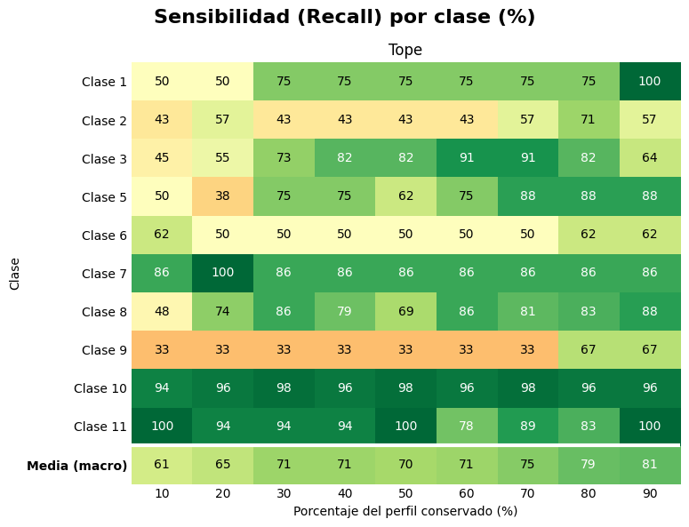
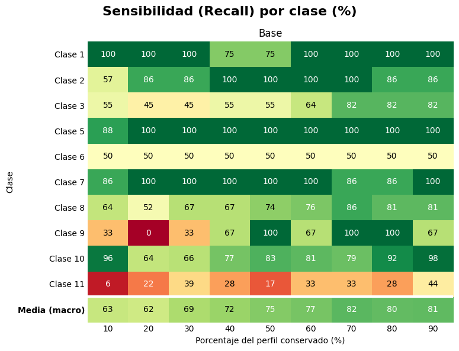
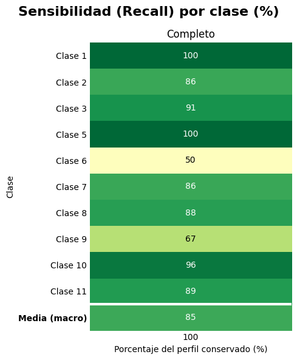

Dispositivo de procesamiento utilizado: cuda
Modelo utilizado: model_resnet18_unificado_bs16_lr1e-3_weighted_unfreeze.pth
Archivo de salida con predicciones (CSV): predicciones_test_model_resnet18_unificado_bs16_lr1e-3_weighted_unfreeze.csvEvaluación del modelo sobre el split de prueba
Este reporte aplica el modelo entrenado al conjunto de test persistido. Las operaciones se implementan en vasijas.evaluacion; aquí se configuran los datos y el modelo, se eligen las acciones y se presentan sus resultados.
Configuración
Preparación de los datos
Se conserva la división original y se aplica la normalización ImageNet sin aumentación. Cada predicción mantiene la ruta y el identificador de su imagen.
Clases: clase01, clase02, clase03, clase05, clase06, clase07, clase08, clase09, clase10, clase11
Metadata indexada por rutas: 20349Imágenes de prueba: 3059Carga del modelo e inferencia
Se reconstruye ResNet18 desde los pesos locales y se verifica que tenga una salida por clase. Al terminar se comprueba que cada imagen de test tenga exactamente una predicción.
Modelo cargado para evaluar 10 clases.Predicciones verificadas: 3059Resultados y exportación
Las predicciones se unen a la metadata original mediante Identificador. La tabla conserva sus columnas y valores faltantes e incorpora la clase predicha y el indicador de acierto.
Filas: 3059 | Columnas: 18
Aciertos: 2377/3059 (77.71%)
Tabla completa guardada en: output/predictions/predicciones_test_model_resnet18_unificado_bs16_lr1e-3_weighted_unfreeze.csv| Identificador | Tiene asa | Tendencia Formal | Borde | Cuello | Cuerpo | Base | Clase Ana | Diametro Borde | Diametro Base | Altura Total | Cronologia | Ubicacion | id_perfil_completo | borde_origen | porcentaje_avance | clase_predicha | acierto | |
|---|---|---|---|---|---|---|---|---|---|---|---|---|---|---|---|---|---|---|
| 0 | ba_191_4 | Si | IV | 7 | B | 4 | 4 | 1.0 | 128 | 38 | 409 | ibero | Baza | ba_191_4 | completo | 100.0 | clase01 | True |
| 1 | ba_191_4_base_10_centrado | Si | IV | 7 | B | 4 | 4 | 1.0 | 128 | 38 | 409 | ibero | Baza | ba_191_4 | base | 10.0 | clase01 | True |
| 2 | ba_191_4_base_20_centrado | Si | IV | 7 | B | 4 | 4 | 1.0 | 128 | 38 | 409 | ibero | Baza | ba_191_4 | base | 20.0 | clase01 | True |
| 3 | ba_191_4_base_30_centrado | Si | IV | 7 | B | 4 | 4 | 1.0 | 128 | 38 | 409 | ibero | Baza | ba_191_4 | base | 30.0 | clase01 | True |
| 4 | ba_191_4_base_40_centrado | Si | IV | 7 | B | 4 | 4 | 1.0 | 128 | 38 | 409 | ibero | Baza | ba_191_4 | base | 40.0 | clase01 | True |
| ... | ... | ... | ... | ... | ... | ... | ... | ... | ... | ... | ... | ... | ... | ... | ... | ... | ... | ... |
| 3054 | tu_91_3_tope_50_centrado | No | II | 1 | B | 2 | 1 | 11.0 | 181 | 85 | 44 | ibero | Tútugi | tu_91_3 | tope | 50.0 | clase11 | True |
| 3055 | tu_91_3_tope_60_centrado | No | II | 1 | B | 2 | 1 | 11.0 | 181 | 85 | 44 | ibero | Tútugi | tu_91_3 | tope | 60.0 | clase11 | True |
| 3056 | tu_91_3_tope_70_centrado | No | II | 1 | B | 2 | 1 | 11.0 | 181 | 85 | 44 | ibero | Tútugi | tu_91_3 | tope | 70.0 | clase11 | True |
| 3057 | tu_91_3_tope_80_centrado | No | II | 1 | B | 2 | 1 | 11.0 | 181 | 85 | 44 | ibero | Tútugi | tu_91_3 | tope | 80.0 | clase11 | True |
| 3058 | tu_91_3_tope_90_centrado | No | II | 1 | B | 2 | 1 | 11.0 | 181 | 85 | 44 | ibero | Tútugi | tu_91_3 | tope | 90.0 | clase11 | True |
3059 rows × 18 columns
La tabla tabla_predicciones contiene una fila por imagen de prueba con todas las columnas originales de data/11.unificado/metadata.csv, en el mismo orden, seguidas de clase_predicha y acierto (True si acertó, False si no). La unión se realiza mediante Identificador, valida una única coincidencia por imagen y conserva los valores faltantes de la metadata original. El CSV completo se guarda en output/predictions/. Para regenerarlo, ejecutar las celdas desde el principio.
| Identificador | Tiene asa | Tendencia Formal | Borde | Cuello | Cuerpo | Base | Clase Ana | Diametro Borde | Diametro Base | Altura Total | Cronologia | Ubicacion | id_perfil_completo | borde_origen | porcentaje_avance | clase_predicha | acierto | |
|---|---|---|---|---|---|---|---|---|---|---|---|---|---|---|---|---|---|---|
| 0 | ba_191_4 | Si | IV | 7 | B | 4 | 4 | 1 | 128 | 38 | 409 | ibero | Baza | ba_191_4 | completo | 100.0 | 1 | True |
| 1 | ba_191_4_base_10_centrado | Si | IV | 7 | B | 4 | 4 | 1 | 128 | 38 | 409 | ibero | Baza | ba_191_4 | base | 10.0 | 1 | True |
| 2 | ba_191_4_base_20_centrado | Si | IV | 7 | B | 4 | 4 | 1 | 128 | 38 | 409 | ibero | Baza | ba_191_4 | base | 20.0 | 1 | True |
| 3 | ba_191_4_base_30_centrado | Si | IV | 7 | B | 4 | 4 | 1 | 128 | 38 | 409 | ibero | Baza | ba_191_4 | base | 30.0 | 1 | True |
| 4 | ba_191_4_base_40_centrado | Si | IV | 7 | B | 4 | 4 | 1 | 128 | 38 | 409 | ibero | Baza | ba_191_4 | base | 40.0 | 1 | True |
| ... | ... | ... | ... | ... | ... | ... | ... | ... | ... | ... | ... | ... | ... | ... | ... | ... | ... | ... |
| 3054 | tu_91_3_tope_50_centrado | No | II | 1 | B | 2 | 1 | 11 | 181 | 85 | 44 | ibero | Tútugi | tu_91_3 | tope | 50.0 | 11 | True |
| 3055 | tu_91_3_tope_60_centrado | No | II | 1 | B | 2 | 1 | 11 | 181 | 85 | 44 | ibero | Tútugi | tu_91_3 | tope | 60.0 | 11 | True |
| 3056 | tu_91_3_tope_70_centrado | No | II | 1 | B | 2 | 1 | 11 | 181 | 85 | 44 | ibero | Tútugi | tu_91_3 | tope | 70.0 | 11 | True |
| 3057 | tu_91_3_tope_80_centrado | No | II | 1 | B | 2 | 1 | 11 | 181 | 85 | 44 | ibero | Tútugi | tu_91_3 | tope | 80.0 | 11 | True |
| 3058 | tu_91_3_tope_90_centrado | No | II | 1 | B | 2 | 1 | 11 | 181 | 85 | 44 | ibero | Tútugi | tu_91_3 | tope | 90.0 | 11 | True |
3059 rows × 18 columns
Reporte de clasificación.
Fragmentos que se inician desde el Borde (Tope)
precision recall f1-score support
1 0.72 0.72 0.72 36
2 0.36 0.51 0.42 63
3 0.80 0.74 0.77 99
5 0.73 0.71 0.72 72
6 0.57 0.54 0.56 72
7 0.83 0.87 0.85 63
8 0.83 0.77 0.80 378
9 0.24 0.41 0.30 27
10 0.98 0.97 0.97 477
11 0.93 0.93 0.93 162
accuracy 0.82 1449
macro avg 0.70 0.72 0.70 1449
weighted avg 0.84 0.82 0.83 1449
Matriz de confusión normalizada por clase
Para los fragmentos que se inician desde el Borde (Tope)
precision recall f1-score support
1 0.94 0.94 0.94 36
2 0.43 0.89 0.58 63
3 0.69 0.63 0.66 99
5 0.84 0.99 0.90 72
6 0.71 0.50 0.59 72
7 0.77 0.95 0.85 63
8 0.86 0.72 0.78 378
9 0.65 0.63 0.64 27
10 0.77 0.82 0.79 477
11 0.36 0.28 0.31 162
accuracy 0.72 1449
macro avg 0.70 0.73 0.70 1449
weighted avg 0.73 0.72 0.72 1449

Tipos de bases existentes en el conjunto de datos:Base
1 1862
2 1045
3 76
4 76
Name: count, dtype: int64Acierto de Clase Ana según el tipo de base
La exactitud de cada grupo es 100 × predicciones correctas de Clase Ana / imágenes del tipo de base. El gráfico siguiente muestra este porcentaje de aciertos para cada tipo de base. Se usan todas las imágenes de test, incluidos los perfiles completos y los cortes desde ambos extremos.
Los tamaños de los grupos y la distribución de Clase Ana pueden ser diferentes: esta comparación describe el rendimiento observado por tipo de base. Para desglosarlo por clase, se puede usar un mapa de calor de exactitud con Clase Ana en las filas y Base en las columnas.
La variable COLUMNA_TIPO permite cambiar la agrupación a Borde. Para restringir el análisis a cortes desde la base, asignar tabla_predicciones_base a tabla_evaluacion_por_tipo.
| Base | imagenes | aciertos | errores | exactitud_porcentual | |
|---|---|---|---|---|---|
| 0 | 1 | 1862 | 1373 | 489 | 73.74 |
| 1 | 2 | 1045 | 870 | 175 | 83.25 |
| 2 | 3 | 76 | 70 | 6 | 92.11 |
| 3 | 4 | 76 | 64 | 12 | 84.21 |

Borde
1 1159
3 19
4 285
7 779
8 57
9 38
11 437
13 38
14 95
15 38
17 114
Name: count, dtype: int64
| Borde | imagenes | aciertos | errores | exactitud_porcentual | |
|---|---|---|---|---|---|
| 0 | 1 | 1159 | 879 | 280 | 75.841242 |
| 1 | 3 | 19 | 3 | 16 | 15.789474 |
| 2 | 4 | 285 | 174 | 111 | 61.052632 |
| 3 | 7 | 779 | 635 | 144 | 81.514763 |
| 4 | 8 | 57 | 36 | 21 | 63.157895 |
| 5 | 9 | 38 | 34 | 4 | 89.473684 |
| 6 | 11 | 437 | 394 | 43 | 90.160183 |
| 7 | 13 | 38 | 32 | 6 | 84.210526 |
| 8 | 14 | 95 | 55 | 40 | 57.894737 |
| 9 | 15 | 38 | 34 | 4 | 89.473684 |
| 10 | 17 | 114 | 101 | 13 | 88.596491 |
Exactitud según avance del corte y borde de origen
El gráfico compara Tope y Base para cada porcentaje de avance. Cada punto o barra representa 100 × aciertos / imágenes del grupo (avance, borde de origen). La línea horizontal continua verde indica la exactitud observada en los perfiles completos, calculada con sus predicciones reales.

| porcentaje_avance | borde_origen | aciertos | imagenes | exactitud_porcentual | |
|---|---|---|---|---|---|
| 0 | 10.0 | base | 111 | 161 | 68.944099 |
| 1 | 10.0 | tope | 114 | 161 | 70.807453 |
| 2 | 20.0 | base | 94 | 161 | 58.385093 |
| 3 | 20.0 | tope | 126 | 161 | 78.260870 |
| 4 | 30.0 | base | 105 | 161 | 65.217391 |
| 5 | 30.0 | tope | 136 | 161 | 84.472050 |
| 6 | 40.0 | base | 111 | 161 | 68.944099 |
| 7 | 40.0 | tope | 133 | 161 | 82.608696 |
| 8 | 50.0 | base | 116 | 161 | 72.049689 |
| 9 | 50.0 | tope | 130 | 161 | 80.745342 |
| 10 | 60.0 | base | 120 | 161 | 74.534161 |
| 11 | 60.0 | tope | 134 | 161 | 83.229814 |
| 12 | 70.0 | base | 125 | 161 | 77.639752 |
| 13 | 70.0 | tope | 137 | 161 | 85.093168 |
| 14 | 80.0 | base | 128 | 161 | 79.503106 |
| 15 | 80.0 | tope | 138 | 161 | 85.714286 |
| 16 | 90.0 | base | 134 | 161 | 83.229814 |
| 17 | 90.0 | tope | 141 | 161 | 87.577640 |
| 18 | 100.0 | completo | 144 | 161 | 89.440994 |
F1 macro según avance del corte y borde de origen
F1 macro es el promedio de F1 de las diez clases de Ana, con el mismo peso para cada clase. Se calcula a partir de las clases reales y predichas de cada grupo (avance, origen), usando las mismas clases en todos los grupos y zero_division=0.
El gráfico muestra 100 × F1 macro, en una escala de 0 a 100. La línea continua verde corresponde al F1 macro calculado sobre todas las predicciones de perfiles completos. La función reutilizable graficar_metrica_por_avance_y_origen admite metrica="exactitud" o metrica="f1_macro", y gráficos de líneas o barras.

| porcentaje_avance | borde_origen | aciertos | imagenes | f1_macro_porcentual |
|---|---|---|---|---|
| 10.000000 | base | 111 | 161 | 62.352443 |
| 20.000000 | base | 94 | 161 | 58.242310 |
| 30.000000 | base | 105 | 161 | 65.763443 |
| 40.000000 | base | 111 | 161 | 66.126919 |
| 50.000000 | base | 116 | 161 | 71.567766 |
| 60.000000 | base | 120 | 161 | 74.558877 |
| 70.000000 | base | 125 | 161 | 80.507889 |
| 80.000000 | base | 128 | 161 | 79.327557 |
| 90.000000 | base | 134 | 161 | 77.932557 |
| 100.000000 | completo | 144 | 161 | 83.697198 |
| 10.000000 | tope | 114 | 161 | 57.114785 |
| 20.000000 | tope | 126 | 161 | 64.449732 |
| 30.000000 | tope | 136 | 161 | 70.808771 |
| 40.000000 | tope | 133 | 161 | 71.250055 |
| 50.000000 | tope | 130 | 161 | 68.107016 |
| 60.000000 | tope | 134 | 161 | 71.992969 |
| 70.000000 | tope | 137 | 161 | 74.553027 |
| 80.000000 | tope | 138 | 161 | 78.344064 |
| 90.000000 | tope | 141 | 161 | 79.109391 |
Recall por clase y porcentaje conservado
Cada celda muestra 100 × aciertos / ejemplos de la clase y porcentaje seleccionados, con la misma escala de color de 0 a 100. Se muestran las clases 1–11 excepto la 4. La fila Media (macro) promedia el recall de las clases con ejemplos en cada porcentaje; los grupos sin ejemplos se marcan con — y no se incluyen en esa media.
Cambiar BORDE_ORIGEN_MAPA por "tope", "base" o "completo". Para los perfiles completos se muestra una única columna al 100 %. La matriz sin redondear queda en recall_por_clase_y_avance.


